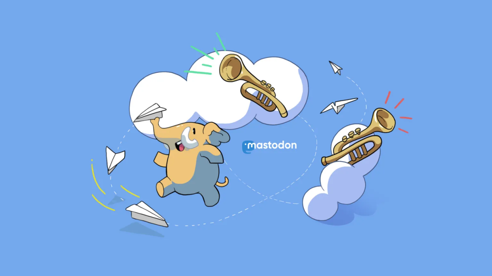
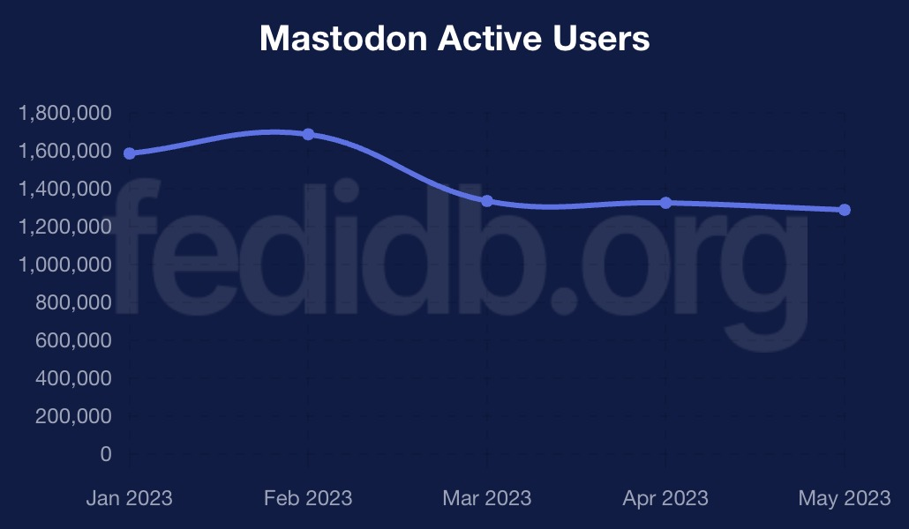

I talked a bit about Mastodon last year, right as the big migration from Twitter was underway. There’s a lot that has changed since then, including some of my own opinions.
First, I’m getting the definitions out of the way. Mastodon is an open-source and federated social media network. “Federated” means it’s made up of a bunch of independent but interconnected servers. Those servers use a protocol called ActivityPub to talk to each other, like how Gmail and Yahoo can send and receive emails between each other with IMAP. Other social media platforms use ActivityPub too, like PixelFed, which are collectively referred to as “the Fediverse.”
According to FediDB, a service set up by PixelFed developer Daniel Supernault (dansup), there are somewhere around 7.5 million Mastodon accounts spread across over 12,000 servers. Roughly 1.2 million of those accounts are active users (have posted in the past month), which is down slightly from the start of the year. The last peak was in February 2023, when the platform was around 1.68 million active users.

That’s only part of the puzzle, though. Other software like Misskey, PeerTube, Calckey, and PixelFed are part of the same larger Fediverse network, adding more users into the mix.
The most significant event this year so far for Mastodon and other Fediverse platforms has been Reddit’s collapse, as it pushed through similar API lockdowns as Twitter. Reddit isn’t quite as terrible as Twitter yet, but Reddit’s CEO continuously saying the dumbest shit possible is not helping. Several Reddit communities are migrating to Lemmy and Kbin, both of which support ActivityPub, which means they are intercompatible with Mastodon and other Fediverse software.
If we look at FediDB again, Lemmy and Kbin are getting close to 100,000 active users, an increase of roughly 10x since the start of the month. That’s pretty remarkable, especially considering both projects are far less mature than Mastodon and options for mobile apps are limited. It remains to be seen if we’ll see Reddit app developers embrace these new platforms in the same way that some popular Twitter client developers did – the only example I’ve seen so far is the Sync for Reddit developer working on a Lemmy client.
The next big event will likely be the launch of Meta’s Twitter clone, which will probably be called “Threads,” and is expected to use ActivityPub at some point. Whenever that happens, Meta’s service will probably very quickly become the top server in the Fediverse ecosystem. Most of the responses to this have been in one of three camps: “this is a good thing because the Fediverse will have more users”, “we should be cautious about this”, and “Meta will ruin everything we’ve built and we’re blocking them.”
To be clear, that last option is usually referring to defederation: when a Mastodon/Fediverse server completely blocks all communication with a specific other server. If you’re following someone on a server, and your admin defederates the server, you don’t follow them anymore and can’t re-follow them. This is a pretty frequent action with servers hosting illegal content or no user moderation. When the far-right social media platform Gab introduced ActivityPub support, pretty much every Mastodon server defederated with it.
I don’t really know where I stand on defederating Meta’s service, because we don’t have all the details yet, but I can understand where people are coming from with an outright block. The Fediverse is full of people who have been pushed away or suddenly banned from Meta-owned platforms or other big social networks (LGBTQ+ people, journalists, sex workers, etc.), and those companies generally have moderation policies that are farther to the right of most Mastodon servers. It’s not difficult to see a reality where user reports about posts and users on Meta’s server might overwhelm Mastodon moderators, who then simply ban Meta’s server instead of continuing to deal with its users. Meta also now officially allows COVID-19 misinformation, and isn’t pushing back on election interference lies.
The discourse around Meta’s platform, some other Fediverse drama, and the continued onboarding issues with Mastodon do make me think that Mastodon and other Fediverse platforms probably won’t ever “go mainstream,” which seemed more likely to me at the end of last year. There’s a lot of people who completely zone out when you have to explain how servers work, or why you can’t favorite a post without copying and pasting a link, or something else like that. I do still think a lot of the people raising those points are being disingenuous, and they aren’t entirely the fault of the projects (you’re working against years of learned behavior about centralized platforms), but that doesn’t make them invalid.
However, I do think Mastodon and other Fediverse platforms are now set up for long-term success. The big migration from Twitter gave it more name recognition, a lot more apps, and support from mainstream social media tools like Buffer and WordPress Jetpack. If I’m a big company, organization, or news site, it’s now so much easier to maintain a presence on Mastodon (and thus, the rest of the Fediverse) than it was a year ago. With tools like Buffer, Mastodon is just another button you click, right next to the Twitter and Facebook buttons. That’s huge.
Right now, the Fediverse is basically the desktop Linux of social media. It’s not mainstream, and probably won’t ever be, but it’s grown enough now that it can’t be completely ignored anymore. Just like the Linux userbase, the Fediverse community leans more towards tech people, but there are also a lot of guys, gals, and non-binary pals on Mastodon who have other interests and are there because they just like the experience.
I’ll miss the Twitter of the past, and I will miss a few very specific and small parts of Reddit, but it’s so exciting to watch Mastodon and other federated social media adapt to the failure of centralized platforms. There’s still a lot more work to be done, but if Twitter, Reddit, and Facebook are any indication, “going mainstream” isn’t the right goal.